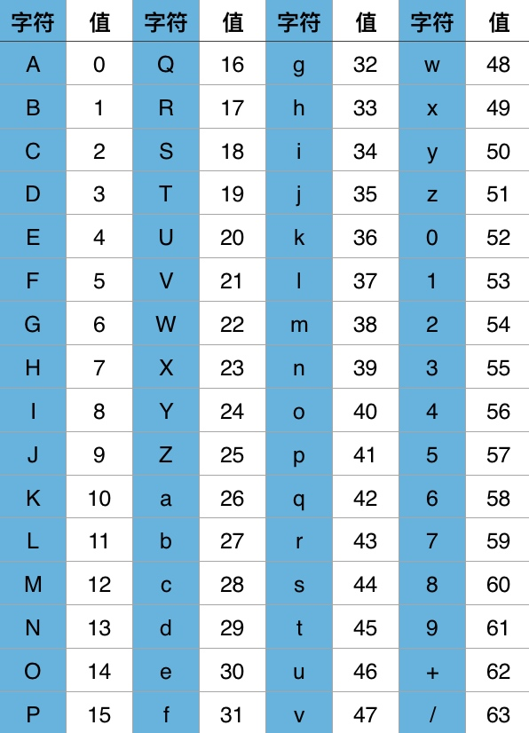
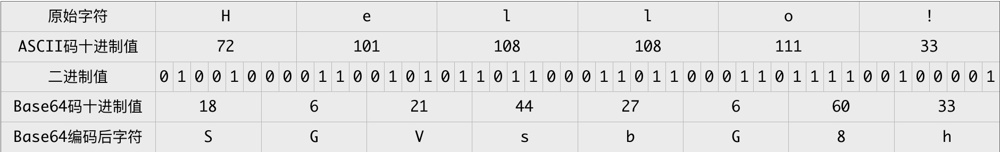
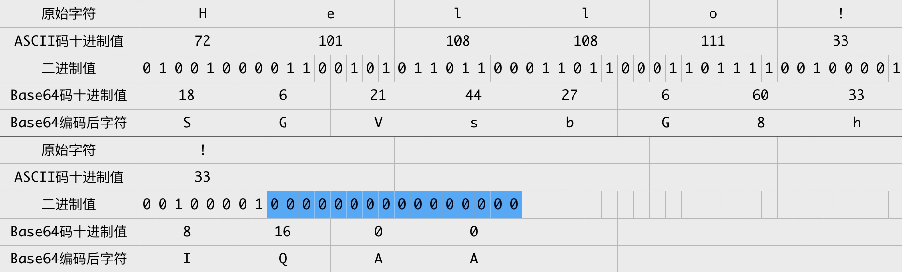
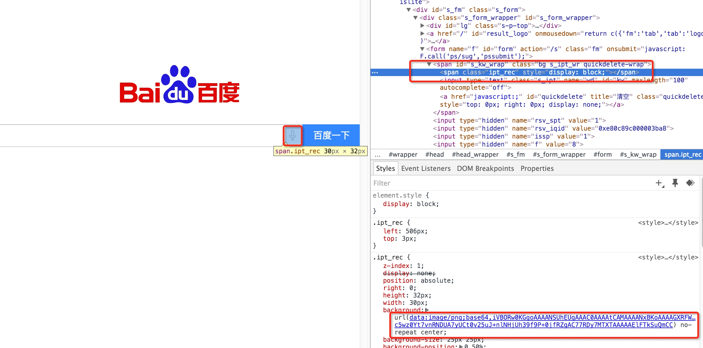

2015年，我们在青云平台上实现了“百度云观测”应用。青云应用本质上是一个iframe，在向iframe服务方发送的请求中会携带一些数据，青云平台会使用Base64 URL对这些数据进行编码，其提供的编码解码算法示例如下：
// php版本
function base64_URL_encode($data) {
return rtrim(strtr(base64_encode($data), '+/', '-_'), '=');
}
function base64_URL_decode($data) {
return base64_decode(str_pad(strtr($data, '-_', '+/'),
strlen($data) % 4, '=', STR_PAD_RIGHT));
}
可以看出，Base64 URL 是标准Base64编码的一个变种，分别用 -、_ 替换标准Base64编码结果中的 + 、 / ，并删除结果最后的 = 。
在实现 “百度云观测” 青云应用时，我在想：
- 为什么要使用Base64编码？
- Base64编码算法是什么样的？
本文是围绕这两个问题思考和实践的结果。
我认为，理解Base64或其他类似编码的关键有两点：
- 计算机最终存储和执行的是01二进制序列，这个二进制序列的含义则由解码程序/解释程序决定
- 很多场景下的数据传输要求数据只能由简单通用的字符组成，比如HTTP协议要求请求的首行和请求头都必须是ASCII编码
以青云应用为例，简单解释这两点。青云平台通过POST一个表单来获取iframe，表单有 payload 和 signature 两项， payload 原本是一个JSON对象，其中的键值可能包含一些特殊字符，比如 &、/ 等，由于青云设计的一种通用的请求交互方案，需要考虑iframe服务方服务器端的各种可能实现，有些服务器端实现没有考虑表单值有这些特殊字符，或者POST请求被中间服务器转换成GET请求再次发出，对于URL来说，&、/都是具有特殊含义的字符，所以需要对请求数据进行特殊编码避免这些字符出现 - 数据发送方对数据按规则进行编码，接收方对应地按规则解码数据。
Base64编码原理
Base64编码之所以称为Base64，是因为其使用64个字符来对任意数据进行编码，同理有Base32、Base16编码。标准Base64编码使用的64个字符为：

这64个字符是各种字符编码（比如ASCII编码）所使用字符的子集，基本，并且可打印。唯一有点特殊的是最后两个字符，因对最后两个字符的选择不同，Base64编码又有很多变种，比如Base64 URL编码。
Base64编码本质上是一种将二进制数据转成文本数据的方案。对于非二进制数据，是先将其转换成二进制形式，然后每连续6比特（2的6次方=64）计算其十进制值，根据该值在上面的索引表中找到对应的字符，最终得到一个文本字符串。
假设我们要对 Hello! 进行Base64编码，按照ASCII表，其转换过程如下图所示：

可知 Hello! 的Base64编码结果为 SGVsbG8h ，原始字符串长度为6个字符，编码后长度为8个字符，每3个原始字符经Base64编码成4个字符，编码前后长度比4/3，这个长度比很重要 - 比原始字符串长度短，则需要使用更大的编码字符集，这并不我们想要的；长度比越大，则需要传输越多的字符，传输时间越长。Base64应用广泛的原因是在字符集大小与长度比之间取得一个较好的平衡，适用于各种场景。
是不是觉得Base64编码原理很简单？
但这里需要注意一个点：Base64编码是每3个原始字符编码成4个字符，如果原始字符串长度不能被3整除，那怎么办？使用0值来补充原始字符串。
以 Hello!! 为例，其转换过程为：

注：图表中蓝色背景的二进制0值是额外补充的。
Hello!! Base64编码的结果为 SGVsbG8hIQAA 。最后2个零值只是为了Base64编码而补充的，在原始字符中并没有对应的字符，那么Base64编码结果中的最后两个字符 AA 实际不带有效信息，所以需要特殊处理，以免解码错误。
标准Base64编码通常用 = 字符来替换最后的 A，即编码结果为 SGVsbG8hIQ==。因为 = 字符并不在Base64编码索引表中，其意义在于结束符号，在Base64解码时遇到 = 时即可知道一个Base64编码字符串结束。
如果Base64编码字符串不会相互拼接再传输，那么最后的 = 也可以省略，解码时如果发现Base64编码字符串长度不能被4整除，则先补充 = 字符，再解码即可。
解码是对编码的逆向操作，但注意一点：对于最后的两个 = 字符，转换成两个 A 字符，再转成对应的两个6比特二进制0值，接着转成原始字符之前，需要将最后的两个6比特二进制0值丢弃，因为它们实际上不携带有效信息。
为了理解Base64编码解码过程，个人实现了一个非常简陋的Base64编码解码程序，见：youngsterxyf/xiaBase64。
由于Base64应用广泛，所以很多编程语言的标准库都内置Base64编码解码包，如：
- PHP：base64_encode、base64_decode
- Python：base64包
- Go：encoding/base64
- ...
Base64编码应用
本文开始提到的青云应用例子只是Base64编码的应用场景之一。由于Base64编码在字符集大小与编码后数据长度之间做了较好的平衡，以及Base64编码变种形式的多样，使得Base64编码的应用场景非常广泛。下面举2个常用常见的例子。
HTML内嵌Base64编码图片
前端在实现页面时，对于一些简单图片，通常会选择将图片内容直接内嵌在页面中，避免不必要的外部资源加载，增大页面加载时间，但是图片数据是二进制数据，该怎么嵌入呢？绝大多数现代浏览器都支持一种名为 Data URLs 的特性，允许使用Base64对图片或其他文件的二进制数据进行编码，将其作为文本字符串嵌入网页中。以百度搜索首页为例，其中语音搜索的图标是个背景图片，其内容以 Data URLs 形式直接写在css中，这个css内容又直接嵌在HTML页面中，如下图所示：

Data URLs 格式为：url(data:文件类型;编码方式,编码后的文件内容)。
当然，也可以直接基于image标签嵌入图片，如下所示：
<img alt="Embedded Image" src="data:image/png;base64,iVBORw0KGgoAAAANSUhEUgAAADIA..." />
但请注意：如果图片较大，图片的色彩层次比较丰富，则不适合使用这种方式，因为其Base64编码后的字符串非常大，会明显增大HTML页面，影响加载速度。
MIME（多用途互联网邮件扩展）
我们的电子邮件系统，一般是使用SMTP（简单邮件传输协议）将邮件从客户端发往服务器端，邮件客户端使用POP3（邮局协议，第3版本）或IMAP（交互邮件访问协议）从服务器端获取邮件。
SMTP协议一开始是基于纯ASCII文本的，对于二进制文件（比如邮件附件中的图像、声音等）的处理并不好，所以后来新增MIME标准来编码二进制文件，使其能够通过SMTP协议传输。
举例来说，我给自己发封邮件，正文为空，带一个名为hello.txt的附件，内容为 您好！世界！。导出邮件源码，其关键部分如下图所示：

MIME-Version: 1.0：表示当前使用MIME标准1.0版本。
Content-Type: text/plain; name="hello.txt"：表示附件文件名为 hello.txt ，格式为纯文本。
Content-Transfer-Encoding: base64：表示附件文件内容使用base64编码后传输。
5oKo5aW977yM5LiW55WM77yB：则是文件内容 您好，世界！ Base64编码后的结果。
不过，MIME使用的不是标准Base64编码。
切忌误用
可能会有人在不理解Base64编码的情况下，将其误用于数据加密或数据校验。
Base64是一种数据编码方式，目的是让数据符合传输协议的要求。标准Base64编码解码无需额外信息即完全可逆，即使你自己自定义字符集设计一种类Base64的编码方式用于数据加密，在多数场景下也较容易破解。
对于数据加密应该使用专门的目前还没有有效方式快速破解的加密算法。比如：对称加密算法AES-128-CBC，对称加密需要密钥，只要密钥没有泄露，通常难以破解；也可以使用非对称加密算法，如 RSA，利用极大整数因数分解的计算量极大这一特点，使得使用公钥加密的数据，只有使用私钥才能快速解密。
对于数据校验，也应该使用专门的消息认证码生成算法，如 HMAC - 一种使用单向散列函数构造消息认证码的方法，其过程是不可逆的、唯一确定的，并且使用密钥来生成认证码，其目的是防止数据在传输过程中被篡改或伪造。将原始数据与认证码一起传输，数据接收端将原始数据使用相同密钥和相同算法再次生成认证码，与原有认证码进行比对，校验数据的合法性。
那么针对各大网站被脱库的问题，请问应该怎么存储用户的登录密码？
答案是：在注册时，根据用户设置的登录密码，生成其消息认证码，然后存储用户名和消息认证码，不存储原始密码。每次用户登录时，根据登录密码，生成消息认证码，与数据库中存储的消息认证码进行比对，以确认是否为有效用户，这样即使网站被脱库，用户的原始密码也不会泄露，不会为用户使用的其他网站带来账号风险。
当然，使用的消息认证码算法其哈希碰撞的概率应该极低才行，目前一般在HMAC算法中使用SHA256。对于这种方式需要注意一点：防止用户使用弱密码，否则也可能会被暴力破解。现在的网站一般要求用户密码6个字符以上，并且同时有数字和大小写字母，甚至要求有特殊字符。
另外，也可以使用加入随机salt的哈希算法来存储校验用户密码。这里暂不细述。
总结
Base64兼顾字符集大小和编码后数据长度，并且可以灵活替换字符集的最后两个字符，以应对多样的需求，使其适用场景非常广泛。
当然，很多场景下有多种编码方式可选择，并非Base64编码不可，视需求，权衡利弊而定。